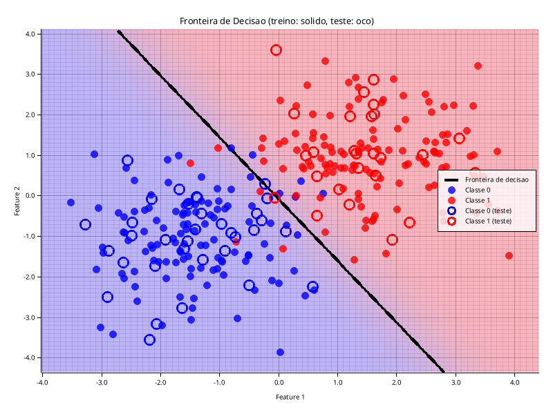

Classificação binária em 2D: sigmoid, Binary Cross-Entropy e gradiente analítico, implementados à mão em Rust. Dataset sintético: 2 gaussianas, 300 pontos, split 80/20.
acurácia no teste
o gradiente após o cancelamento
erro de Bayes — o teto do problema
p = sigmoid(wᵀx + b) = 1/(1+e^−z)
BCE: L = −(1/n)Σ[y·ln p + (1−y)·ln(1−p)]Sigmoid em 2 ramos (z≥0 / z<0) p/ evitar overflow.
∂L/∂w = (1/n)·Σ (p − y)·x
∂L/∂b = (1/n)·Σ (p − y)A chain-rule BCE∘sigmoid cancela → sobra (p−y). Treino: lr=0.1, 1000 épocas.

| Métrica | Treino | Teste |
|---|---|---|
| Acurácia | 95.4% | 96.7% |
| Precisão | 0.952 | 0.962 |
| Recall | 0.960 | 0.962 |
| F1 | 0.956 | 0.962 |
| BCE | 0.106 | 0.065 |
Heatmap de probabilidade + reta p=0.5. Modelo linear → fronteira reta. Gap treino/teste pequeno → boa generalização.
+λ‖w‖²), critério formal de parada, mini-batch para escala.